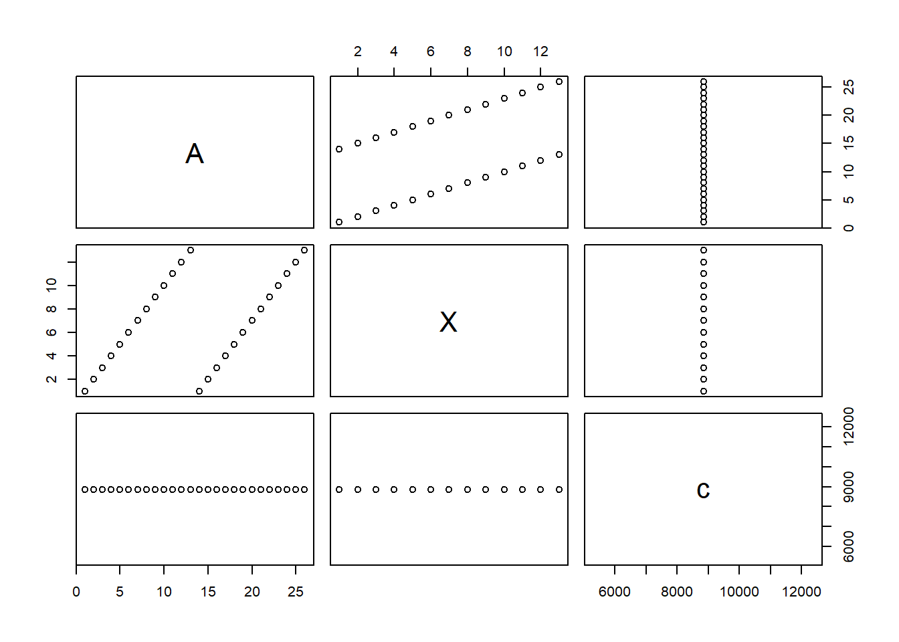

Topic 3 Data Collection and Data Loading
We briefly introduce the basic sampling plans and study design to collect valid data for statistical analysis and modeling. Since all analyses will be based on R, we will demonstrate to to load data sets in different formats to R.
3.1 Sampling Plans
In general, probability sampling plans generate samples suitable for inferential statistics (such as confidence intervals and testing hypotheses).
3.1.1 Simple Random Sampling (SRS)
In this sampling plan, each subject is randomly chosen in such a way that each subject in the population has an equal chance, or probability, of being selected. In mathematical statistics, there is a rigorous definition of SRS plan.
3.1.2 Systematic sampling
In this sampling plan, we (randomly) label all subjects in a population from 1, 2, …, N (population size), randomly choose a label, say \(n_0\), and then select every \(k^{th}\) subjects to include in the sample. That resulting sample is called a systematic sample. Because the
3.2 Study Designs
Depending on whether the variables in the study were modified or filtered by researchers, we can categorize the study designs into observational and experimental studies.
3.2.1 Observational Studies
Observational studies are ones where researchers observe the effect of a risk factor, diagnostic test, treatment, or other intervention without trying to remove confounding factors.
Cross-sectional studies collect information on a population by taking a snapshot or cross-section of the population. These studies usually involve one contact with the study population and are relatively cheap to undertake.
Pre-test/post-test Take two cross-sectional samples taken from randomly selected subjects before and after an intervention (such as a new treatment) applied to the randomly selected subjects in the study. The objective is to see whether a characteristic of the sample changed before and after the intervention.
Retrospective studies use historical information to study the characteristics of a population. Sometimes current information about the population is not available or difficult to obtain, we then use the historical information under certain assumptions.
Longitudinal studies follow study subjects over a period of time with repeated data collection throughout. Most are observational studies that seek to identify a correlation among various factors. Thus, longitudinal studies do not manipulate variables and are not often able to detect causal relationships.
3.2.2 Experimental Designs
Experimental studies are ones where researchers carefully design experiments to remove potential confounding factors introduce an intervention and then study the effects.
Prospective studies, also called follow-up study, in which you select subjects randomly and wait for a period of time to record the formation of interest to perform statistical analysis.
Randomized controlled trials (RCT) in clinical studies are always prospective studies and often involve following a “cohort” of individuals to determine the relationship between various variables.
Longitudinal studies can also be considered as experimental studies.
3.3 Loading Data to R from External Data Files
Three basic types of data files are common in practice: csv, txt, and xls(x). I have uploaded the well-known **iris* data set to the course web page in the aforementioned formats. You can practice the R functions to load these external data sets to R.
3.3.1 Text File ( aka. Delimited Text File)
R command read.table() will load text files in R.
Caution: If the data file contains missing values, you need to handle the missing values before loading it to R. If you take a formal programming course, you will write several lines of code to clean the data. In this class, we only use basic R commands to do analysis.
The code in the following code chunk does not work!!!
placement.data = read.table("C:\\STA501\\w02\\placement.txt", header=TRUE) 3.3.1.1 Read files from a remote web server
### delimited text file
irisTXT="https://raw.githubusercontent.com/pengdsci/STA501/main/Data/w02-iris.txt"
iris.text = read.table(irisTXT, header = TRUE)
### csv file
irisCSV = "https://raw.githubusercontent.com/pengdsci/STA501/main/Data/w02-iris.csv"
iris.csv = read.csv(irisCSV, header = TRUE)Note that there is no commands such as read.table() and read.csv() in the base R to read Excel file from URL. There are several R functions in different libraries, such as read_xlsx() and read_xls() in library {readxl}, can read Excel file from the local drive (see the example in the next sub-setion).
3.3.1.2 Read files from local folder
### delimited text file
iris.text.loc = read.table("C:\\STA501\\w02\\w02-iris.txt", header = TRUE)
### csv file
iris.csv.loc = read.table("C:\\STA501\\w02\\w02-iris.csv", header = TRUE)
## Excel file - no built-in command in the base R can read Excel file to R.
## need to load a command in a R library.
library(readxl)
iris.xlsx.loc = read_xlsx("C:\\STA501\\w02\\w02-iris.xlsx")3.4 Data Frame and List
Data frame can hold different type of variables but requires variables to be equal in length. If you have variables in different types and having different length, you need to use list to hold these variables.
3.4.1 Data Frame
- We define following categrical and numeric vectors (data sets)
veca = 1:26 # c() is unnecessary since colon (:) is a shortcut to
# define a patterned sequence. 1, 2, 3, ..., 24, 25, 26.
vecb = 101:126
vecc = 201:226
vecd = letters # 26 letters (lower case)
vece = LETTERS # upper-case letters- Example 1. Define data frame with different types of variables
- Example 2. Define a data frame using vectors with unequal width. The issue is that R will recycle the small vectors whose lengths are factors of the length of the longest vector to make equal lengths columns in the data frame.
## CAUTION: If the lengths of individual variables are different,
## R will recycle the values in the
## mall data (short vector) to make the equal length across the columns
##
dframe2 = data.frame(A = veca, # this is a vector with 100 values
X = 1:13, # this vector has 13 values
c = sum(veca+vecb+vecc)
# two comments: 1. c is reserved for defining
# vectors. Should not be used a name
# of any objects in R
# 2. this is also a single value.
)- Example 3. The following code will produce an error because Y has 4 rows and A has 26 rows!
dframe2 = data.frame(A = veca, # this is a vector with 100 values
Y = c(33,44,55,66), # 4 values in vector b!
W = c(99,999) # 2 values in W!
)Error in data.frame(a = veca, b = c(33, 44, 55, 66), c = c(99, 999)) : arguments imply differing number of rows: 26, 4, 2
you can check whether the data frame is correctly defined. I added an option eval = FALSE to the following code chunk to avoid printing out the 100-by-3 data frame.

The following code does not work since no specific column is specified to calculate the standard deviation!
sd(dframe2) # sd() calculates the standard deviation of a SINGLE vector, but
# There 3 in the data frame. The error message says that R cannot
# cannot combine all columns to make a vector. In R, numerical
# values are 'double'.We can calculate the standard deviation of the variables in the data frame one by one. For example,
## [1] 7.648529